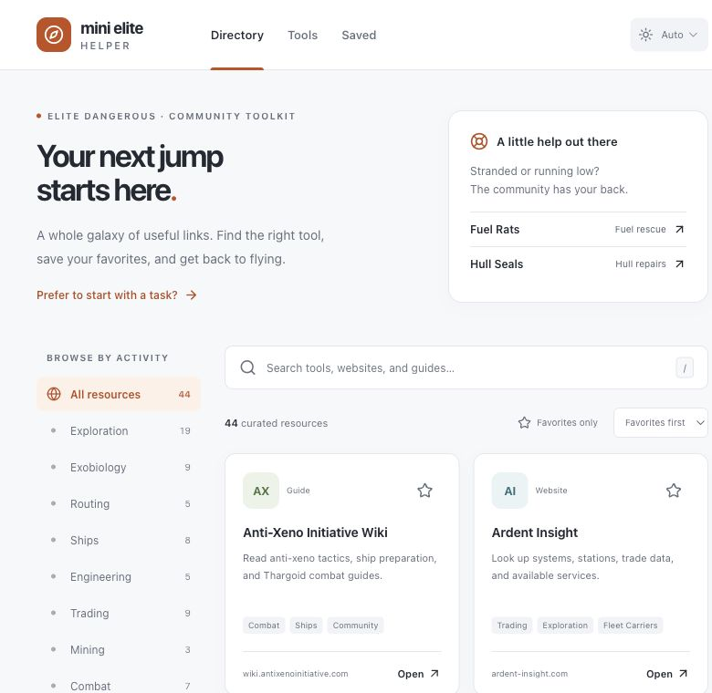

MinEDHelper
A directory of Elite Dangerous community tools. Find a resource by activity and keep useful links close.

Finding the right tool
Elite Dangerous has a lot of community resources. MinEDHelper brings them into a searchable directory, with categories for exploration, ship building, trading, and other activities. A separate Tools page offers shortcuts organized by task.
Keeping it useful
Favorite resources and personal bookmarks live on the Saved page. They stay in the browser, with tags and categories to help organize them. The interface also supports light, dark, and system themes.